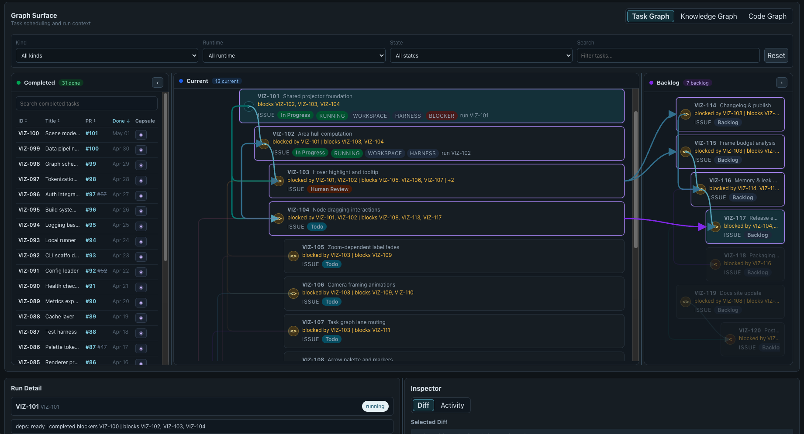
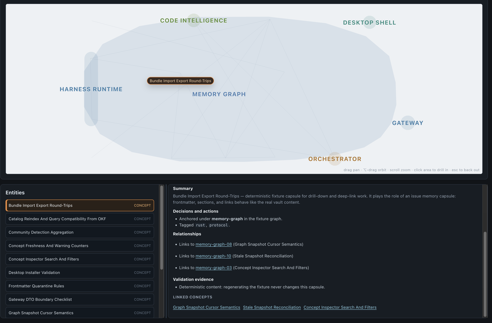

ESTACIÓN 7
Orquestación de trabajo
Del spec a tareas ejecutables, revisión por agentes y memoria del proyecto.

OpenSymphony · captura de referencia del repositorio, con datos de ejemplo.
RECORRIDO · 120 MIN
Conceptos, demo y práctica
Conceptos
Capas, problemas, patrones, Symphony y gobernanza. Guía en conceptos.md.
Demo
OpenSymphony: despacho, revisión por agentes, integración, grafos y memoria.
Práctica
Despachas la primera tarea de tu plan y revisas su PR.
Cierre
Entregable, rúbrica y preguntas.
La demo sigue una tarea nueva y retoma otra que ya pasó por varios ciclos de revisión.
CONCEPTOS · 1 DE 5
Modelo, arnés, meta-arnés y orquestador
| Capa | Qué hace | Ejemplos |
|---|---|---|
| Modelo | Interpreta y propone respuestas o acciones. | Claude, GPT, Gemini |
| Arnés | Conecta el modelo con herramientas, permisos, contexto, skills y hooks. | Claude Code, Cursor, Codex, Antigravity, Copilot, OpenHands |
| Meta-arnés | Lanza y supervisa arneses, sus sesiones y workspaces. | El host de agentes de OpenSymphony |
| Orquestador | Gobierna el ciclo de vida de las tareas: elegibles, asignación, reintentos, cierre. | Symphony, OpenSymphony + Linear |
El tracker gobierna el estado de la tarea; el repo, el código. Notas y resúmenes son vistas derivadas.
CONCEPTOS · 2 DE 5
Tres problemas que resuelve un orquestador
Con varios agentes en paralelo se agregan aislamiento, coordinación e integración.
Pregunta: ¿cuál de los tres te costó más entre E4 y E6?
CONCEPTOS · 3 DE 5
Patrones de coordinación
| Patrón | Mecanismo | Riesgo a vigilar |
|---|---|---|
| Bucle con estado en discoRalph; arneses largos de Anthropic | Contexto nuevo en cada vuelta; progreso en archivos, lista de funcionalidades y commits. | Avanzar sin progreso real: límites y criterios de salida. |
| EspecializaciónPlanificar, generar, evaluar | Subagentes con objetivo y contexto propios; el evaluador separado del que implementa. | Un agente califica bien su propio trabajo. |
| Orquestador con trackerSymphony, OpenSymphony | Un workspace aislado por tarea; estado en el tracker; política en el repo. | Más coordinación no garantiza mejores resultados. |
Para evaluar uno: sigue tareas reales hasta su integración y registra dónde necesitaron corrección humana.
CONCEPTOS · 4 DE 5
Symphony: la especificación de un orquestador
openai/symphony · SPEC.md · OpenSymphony la implementa en Rust y agrega grafo de tareas, revisión por agentes y memoria.
CONCEPTOS · 5 DE 5
Cuándo una tarea está terminada
| Momento | Qué lo demuestra |
|---|---|
| Lista | Dependencias resueltas, aceptación observable y un comando real de verificación. |
| Terminada | Diff, pruebas con su resultado, CI en verde y criterios marcados. "Listo" no es evidencia. |
| Revisada | Un agente distinto revisa el PR; tú revisas diff y evidencia antes de integrar. |
| Controlada | Hooks reaccionan a eventos; CI y la revisión controlan el merge. |
| Continuable | Handoff o memoria que la siguiente tarea consulta y verifica. |
Pregunta: ¿qué evidencia necesitas ver para integrar un PR de agente sin miedo?
OBSERVABILIDAD Y EVALUACIÓN
Qué aporta EBO hoy
Alcance actual
Observabilidad de eventos de agente y arnés, con una capa de ontología de comportamiento y su evaluación.
Permite analizar el comportamiento capturado; la evidencia disponible depende de la integración.
Posible extensión futura
Vincular esas observaciones con tareas, revisiones y resultados de integración.
Requeriría instrumentación adicional para investigar dónde falla la coordinación. No forma parte del alcance actual.
DEMO · 30 MIN
Del spec al landing
opensymphony init y el contrato WORKFLOW.md.10 minCorrer el orquestador y observar el despacho de una tarea nueva.10 minRecorrer las revisiones por agentes e integrar un PR ya preparado.5 minGrafo de tareas, camino crítico y memoria de la tarea integrada.La tarea despachada puede seguir ejecutándose mientras examinamos el PR ya revisado.
DEMO · INSTALACIÓN
Conectar el repositorio, Linear y el arnés
Terminal del repositorio
cargo install opensymphony
opensymphony init
opensymphony run
# En otra terminal
opensymphony desktopComandos de la documentación de OpenSymphony.
Configuración que revisaremos
Acceso a Linear y al repositorio GitHub.
Arnés autenticado, modelo y permisos.
Proyecto observado, estados de trabajo y rama de destino.
WORKFLOW.md y config.yaml.
Arrancar el orquestador después de revisar el proyecto y la política de despacho.
DEMO · PLANIFICACIÓN
Del alcance completo a las tareas de Linear
| Skill | Resultado que inspeccionamos |
|---|---|
create-implementation-plan | Manifest, hitos y un archivo por tarea; aceptación, contexto y validación. |
convert-tasks-to-linear | Validación, dry-run y publicación del paquete revisado. |
linear | Consulta y actualización de issues, dependencias y estados. |
Cada requisito del alcance debe corresponder a tareas publicadas o a evidencia de implementación existente.
DEMO · DESPACHO
Qué recibe el agente
En la app: seleccionar el issue, abrir su ejecución y comprobar el contexto y los primeros eventos.
Si la tarea no se despacha, revisar dependencias, estado del issue y configuración antes de reintentar.
DEMO · REVISIÓN POR AGENTES
Entrega un cambio que se pueda revisar
| En el PR preparado | Qué comprobar |
|---|---|
| Ciclos anteriores | Un hallazgo, la corrección y la verificación posterior. |
| Revisión vigente | Que cubre el commit que se va a integrar. |
| Resultado | Aceptación cubierta, CI y ausencia de hallazgos pendientes que bloqueen el merge. |
La revisión debe corresponder al commit que se va a integrar.
DEMO · LANDING
Integrar el PR y actualizar el trabajo
En esta demostración
Comprobar el commit revisado, hacer merge y verificar el resultado en GitHub.
Actualizar Linear según el workflow y comprobar la captura de memoria.
Política del proyecto
El merge y el cambio de estado se pueden automatizar con condiciones explícitas.
La intervención humana permite decidir alcance, aceptar riesgos y conservar comprensión del código.
La política del proyecto define las condiciones de merge y de cierre en Linear.
DESKTOP · GRAFO DE TAREAS
Dependencias, ejecución y resultado
Captura de referencia con datos de ejemplo. En vivo: seleccionar una tarea, seguir sus dependencias y abrir ejecución y PR.
DESKTOP · GRAFO DE CONOCIMIENTO
Del Agent Workpad al contexto de otra tarea

Durante el trabajo
El Agent Workpad conserva decisiones, resultados y asuntos pendientes.
Después del cierre
La captura conserva conocimiento de la tarea y del PR en cápsulas durables.
En la siguiente tarea
Consultar memoria relacionada y comprobar sus fuentes antes de usarla como contexto.
Captura de referencia con una cápsula de ejemplo. En vivo: abrir una cápsula real y seguir un enlace a su fuente.
DESKTOP · GRAFO DE CÓDIGO
Localizar símbolos y comprobar el código vigente
En la app
Buscar un símbolo, abrir sus relaciones y navegar al archivo correspondiente.
Comparar con el diff de una ejecución cuando esté disponible.
En el trabajo del agente
Usar el índice para encontrar código relevante y comprobar el AST del workspace antes de editar.
La búsqueda estructural orienta la modificación; las pruebas comprueban su efecto.
APLICACIÓN EN EL PROYECTO
Probar orquestación con el plan de E6
Despacha la primera tarea de tu plan con OpenSymphony (ruta A) o con tu agente (ruta B) y llévala hasta la revisión.
| Con cualquier arnés u orquestador | Qué conservar |
|---|---|
| Despacho | Tarea identificable, dependencias y condiciones de inicio. |
| Contexto | Instrucciones, código y decisiones relevantes. |
| Continuidad | Notas de trabajo, evidencia y memoria consultable. |
| Integración | Revisión por agentes, validación y política de cierre. |
Un orquestador propio se justifica cuando necesitas reglas o integraciones que los existentes no cubren y puedes mantener su operación.
OpenSymphony · Recursos de E6 y E7 · Guía de la estación · Conceptos